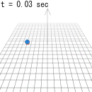
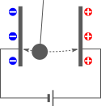
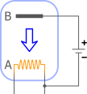
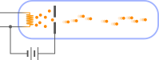

3. 運動する電荷に働く力

磁場中を運動する電荷は、ローレンツ力を受ける。
この章のシミュレーション：（別ウィンドウで開く）
アンペール力の正体に迫りたい
前章で見たように、磁場中に置かれた電流は、アンペール力を受ける。電流は、導線の中を「何か」が流れることによって生じていると考えられる。ということは、アンペール力を受けているのは実際にはその「何か」であって、磁場もまたそれによって生じているのではないだろうか。
この章では、まず、電流とアンペール力の正体が、それぞれ電荷の流れおよび運動する電荷が受ける力であることについて述べる（3.1節）。ついでに、導線の中を流れているのが、電子と呼ばれる粒子のようなものであることを見る（3.2節）。
3.1
ローレンツ力
この節では、電流の正体が電荷の流れであること、および、磁場中を動く電荷にはローレンツ力と呼ばれる力(
1)が働くことについて述べる。
シャトルボール実験：電流は電荷の流れ

導線を切断すると電流は止まる。従って、導線の中を何かが流れていると考えるのは自然である。それは電荷を帯びていることが、右図のようなシャトルボール実験（Shuttling ball experiment）を行うと分かる（シャトルとは往復を繰り返すものという意味である）。これは、金属などの帯電しやすいボールを吊り下げて、一方の電極につけた後、手を離すとボールが減衰することなく勝手に往復運動を繰り返すというものである。電極間には電場が生じており、帯電したボールがクーロン力を受けることによる。この時、同時に電流も流れるというのが重要である（ただし非常に小さい）。
詳しく見ると次のようになる。まず、電極に接触した球が電極と同じ符号に帯電し、反発力を受けて反対側に移動する。その後反対側の電極に接触すると、今度は逆符号の電荷をもつようになり、逆方向の反発力を受け元の電極のほうに戻ってくる。これにより、往復運動を繰り返すことになる。
これにより、ボールの電荷を測れば、どれだけの電荷が運ばれているかが分かる。実際に測定を行うと、単位時間あたりに運ばれる電荷の量と、電流の値は比例関係にあり、比例係数は、電流が
1A
の時、1秒当たり運ばれる電荷は
1C
となる。つまり
A=C⋅s−1
となるわけである。比例係数がきれいになっているのは、こうなるように電荷の単位であるクーロン
C
を定義したからである（第1章でクーロンの定義が中途半端な値になっていると述べたが、それは、ここを揃えるためだったのである）。
ローレンツ力(1)：運動する電荷に働く力
第2章で見たように、磁場中におかれた電流にはアンペール力が働く。そして、電流は電荷の流れを伴う。ということは、磁場中を動く荷電粒子は、アンペール力に対応するような力を受けると考えられる。この力をローレンツ力という。アンペール力は、電流内を運動する電荷が受けるローレンツ力により説明できるはずである。
まず、電荷
q
を持つ荷電粒子が磁場
B(x)
の中を運動するときの、ローレンツ力を考える。電荷
q
を持つ多数の荷電粒子が、一斉に同じ速度
v
で動いている状況を考えてみる。すると、これによって発生する電流要素
δI
は、以下のようになる：（
n[m−1]
は荷電粒子の導線上での個数密度、
δl[m]
は電流要素の長さ）
δI=nqv⋅δl
1つの荷電粒子に働くローレンツ力を
F
とおくと、電流要素に働く力はローレンツ力の和なので
nδl⋅F
である。これがアンペール力
δI×B
に等しいのだから、
F
は以下のようになる：
F=qv×B(1)
一様磁場の場合に数値計算を行うと、右図のように磁場の方向に沿ったらせん運動をする。
荷電粒子の運動方程式(2)
以上により、電荷にはローレンツ力(
1)が働くことが分かった。電場が存在してクーロン力も働く場合には、単純に足し合わせればよい。クーロン力とローレンツ力をまとめて電磁気力という
（ローレンツ力と言った時にクーロン力も含める流儀もある）。また、電場と磁場を合わせて電磁場という。
以上により、電磁場中での電荷の運動
x(t)
は、以下の荷電粒子の運動方程式：
m¨x=qE+q˙x×B(2)
を解けばよい。これが、電磁力学において、電荷の運動を支配する方程式である。後は、電磁場
E,B
が分かれば上式を解くことができるわけだが、静電磁場については、これまでに出てきたクーロンの法則とビオ・サバールの法則から求められる。しかし、電磁場の源となる電荷・電流密度が時間変化する場合には、それらの法則は成り立たないことが次章で分かる。そのため、次章以降では、そのような場合の電磁場を与える法則を導くことが主題となる。
3.2
電流は、電子の流れ
前節では思考実験的にローレンツ力を考えたが、ローレンツ力は非常に小さいので、実際に帯電した物体を動かして直接測定するのは難しい。この節では、導線を流れる電流が、電子と呼ばれる荷電粒子の流れであり、それを用いれば、ローレンツ力を直接確認できることを見る。
エジソン効果：加熱した導線は電子を放出する
導線を切断すると、電流は止まる。従って、導線の中を何かが流れていると考えるのは自然である。その何かを導線から取り出すことはできないだろうか。

そのためには、導線を加熱すればよいことが知られている。例えば、白熱電球のタングステンフィラメントは2000℃程度になるが、この時右図のように、負極側のフィラメントAと、電球内に挿入した正極Bの間に電流が流れることが知られている。これをエジソン効果という。本来であれば、この回路は閉じていないため電流が流れないはずである。従って、何かが空中を伝っているのだと考えられる。その何かのことを電子と呼ぶ。ただし、図中の電源を逆向きにすると電流は流れなくなる。
同図のように、電流はB→Aに向かって流れる（＋から－）。しかし電子は、加熱したAから飛び出すはずなので、逆のA→Bに向かって流れていくはずである（－から＋）。即ち、電子の流れは、電流の向きとは逆向きになる。これは、電子は負の電荷を持つことを意味する。正の値を持つように定義するほうが自然だが、そうなっていないのは、電子が発見される前に決めた名残という単に歴史的なものである。
電子銃による電子ビームの可視化

右図で模式的に示したように、エジソン効果によって放出された電子に高い電圧をかけて加速させて電子ビームを発生させる装置を、電子銃という。電子銃の内部はほぼ真空であるが、わずかにヘリウムガスなどを入れておくと、電子ビームに沿って発光する。これにより、電子ビームに外部から電場や磁場をかけたときに、電子ビームがどのような影響を受けるかを可視化することができる。
上述のように、電子は負の電荷を持つので、電子ビームに電場をかけると、電場と逆方向に曲がる。また、磁場
B
をかけると、
−v×B
の方向に曲がることが確認できる（
v
は電子の速度、マイナスがついているのは電荷が負であるため）。
電子は粒子的な性質を持つ
もし、電子が粒子であれば、運動方程式(
2)：
（再掲）
m¨x=qE+q˙x×B(3)
に従うだろう。電子の運動を観察することで、電子1個の質量と電荷を特定したい。まず、上式の両辺を
m
で割ればわかるように、常に
q/m
がまとまって現れる。
q/m
を比電荷という。よって、この比電荷が同じであれば、まったく同じように運動するので、この式を用いた実験から求められるのは比電荷のみであり、
m,q
個別の値は分からない。
というわけでまず、
q/m
を測定する方法を考える。電子の運動を直接観測することは難しいので、電子ビームの軌跡を測定することになる。軌跡から加速度を逆算するには、電子の速度
˙x
が分かればよい。
˙x
は、クーロン力とローレンツ力が「互いに逆向きかつ電子ビームに垂直」に働くように電磁場
E,B
の向きを決めた後、電子の加速度
¨x
が
0
になるように
（＝ビームが直線になるように）
E,B
の大きさを調節すればよい。そうすれば、式(
3)から
˙x
が求まる。後は、例えば、ビームに垂直に磁場をかけるとビームが円形になるので
（3.1節）、その半径から加速度を逆算することで、比電荷が得られる。電子の比電荷は、以下のようになることが知られている：
qm=−1.7588⋯×1011C⋅kg−1
よって残るは、電子の電荷
q
と質量
m
であるが、どちらか一方が分かればよい。電荷
q
を求める実験として、ミリカンの油滴実験が知られており、以下の【3.2-注1】のようにすればよい。このような実験により、
q
および
m
は以下のようになることが知られている：
q=−1.6022⋯×10−19Cm=−9.1094⋯×10−31kg
電子が粒子であるならば、その大きさはどうなのだろうか。また、導線の中をどのように流れているのだろうか。この話題は非常に興味深いが、現状では深入りせずに、通常のマクロな物体の運動に引き続き着目する。電子のようなミクロな世界の性質は量子力学の主題である。
【3.2-注1】電子の電荷を求める：ミリカンの油滴実験
考え方はシンプルである。まず、霧吹きで油を撒く。すると、霧を構成する小さな油滴は、重力
fg=m油滴g
によって下へ向かう。ただし、
m油滴
は油滴の質量であり、油滴の大きさと比重から求まる。油滴は噴霧した時の摩擦で勝手に帯電しているので、重力に逆らうようなクーロン力
fe=q油滴E
が働くように電場
E
をかけ、油滴を静止させる：
m油滴g=q油滴E
。これにより、油滴の電荷
q油滴
が求まる。
このような実験を様々な油滴に対して行うと、必ず、ある電荷
q
の整数倍になることが知られている。この
q
を素電荷といい、電子の電荷である。